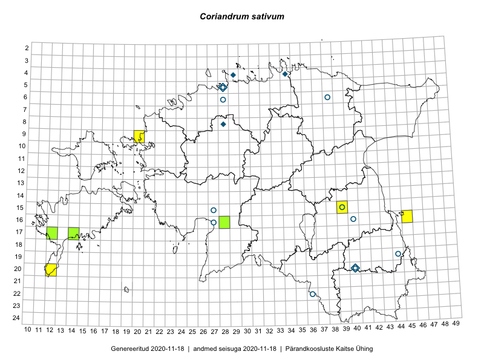

Coriandrum sativum — aedkoriander
Apiaceae :: Coriandrum sativum L. (37)

Kaart põhineb 37 kirjel:
vaatlusi 7
herbaareksemplare 30
Taime kaasaegsed ja ajaloolised leiukohad asuvad 19 ruudus.
Tingmärgid ja ruutude arvud periooditi (U1 / V2 )
█ 2006–2020 (7/–)
◆/◇ 1971–2005 (4/2)
○ 1921–1970 (10/2)
+ kuni 1920 (0/0)
× hävinud (–/0)
? kaheldav (–/0)
| Ruut | Leidja(d) | Leiuaeg | Kirje |
|---|---|---|---|
| 20-12 | Timo Pettay | 2016-07-02 | ruut/ala: Coriandrum sativum L. |
| 04-29 | Heinrich Aasamaa | 1988 | ruut/ala: Coriandrum sativum L. |
| 16-40 | Linda Viljasoo, Maret Kask, A. Remmel | 1947–1981 | ruut/ala: Coriandrum sativum L. |
| 16-45 | Toomas Kukk, Eerik Leibak | 2015-07-29 | ruut/ala: Coriandrum sativum L. |
| 17-14 | Meeli Mesipuu, Toomas Kukk, Johannes Kõdar | 2016-08-11 | ruut/ala: Coriandrum sativum L. |
| 15-39 | Peeter Pärn, Mari Pärn | 2019-08-20 | ruut/ala: Coriandrum sativum L. |
| 09-20 | Ott Luuk | 2019-09-18 | ruut/ala: Coriandrum sativum L. |
| 15-27 | Vilma Kuusk | 1964-07-07 | TAA0022312: Coriandrum sativum L. |
| 16-40 | L. Kauer | 1933-07-02 | TU301044: Coriandrum sativum L. |
| 19-44 | L. Pihlapuu | 1963-07-12 | TU301045: Coriandrum sativum L. |
| 20-40 | L. Pihlapuu | 1971-08-02 | TU301046: Coriandrum sativum L. |
| 20-40 | L. Pihlapuu | 1971-08-02 | TU301047: Coriandrum sativum L. |
| 19-44 | L. Pihlapuu | 1963-07-12 | TU301048: Coriandrum sativum L. |
| 20-40 | L. Pihlapuu | 1950-07-10 | TU301052: Coriandrum sativum L. |
| 16-27 | A. Remmel | 1961-08-09 | TU301053: Coriandrum sativum L. |
| 06-38 | A. Remmel | 1959-07-25 | TU301054: Coriandrum sativum L. |
| 16-40 | A. Remmel | 1959-07-11 | TU301055: Coriandrum sativum L. |
| 16-40 | A. Remmel | 1962-09-14 | TU301057: Coriandrum sativum L. |
| 16-40 | A. Remmel | 1962-09-14 | TU301058: Coriandrum sativum L. |
| 16-40 | A. Remmel | 1966-07-26 | TU301059: Coriandrum sativum L. |
| 15-39 | A. Remmel | 1965-10-02 | TU301060: Coriandrum sativum L. |
| 22-36 | A. Remmel | 1965-08-14 | TU301061: Coriandrum sativum L. |
| 05-28 | A. Remmel | 1965-10-07 | TU301062: Coriandrum sativum L. |
| 16-27 | A. Remmel | 1961-08-09 | TU301063: Coriandrum sativum L. |
| 05-28 | A. Remmel | 1959-07-24 | TU301065: Coriandrum sativum L. |
| 05-28 | A. Remmel | 1958-07-23 | TU301066: Coriandrum sativum L. |
| 05-28 | A. Remmel | 1965-10-06 | TAM0028029: Coriandrum sativum L. |
| 08-28 | E. Tare | 2000-08-16 | TAM0028981: Coriandrum sativum L. |
| 08-28 | E. Tare | 2000-08-16 | TAM0028982: Coriandrum sativum L. |
| 17-14 | Toomas Kukk, Meeli Mesipuu, Johannes Kõdar | 2016-08-11 | TAA0137042: Coriandrum sativum L. |
| 17-12 | Mari Reitalu | 2017-08-31 | TAA0143137: Coriandrum sativum L. |
| 16-28 | Indrek Tammekänd | 2019-06-29 | TAA0151969: Coriandrum sativum L. |
| 17-14 | Mari Reitalu | 2019-09-14 | TAA0152143: Coriandrum sativum L. |
| 04-34 | Rein Sander, Vilma Kuusk | 1974-07-23 | TAA0022307: Coriandrum sativum L. |
| 04-34 | Rein Sander, Vilma Kuusk | 1974-07-23 | TAA0022308: Coriandrum sativum L. |
| 05-28 | A. Üksip | 1934-08-16 | TU301042: Coriandrum sativum L. |
| 06-28 | A. Remmel | 1962-09-04 | TU301067: Coriandrum sativum L. |
Ruutude arv uue atlase andmekogu järgi. Muuhulgas arvestab vanemat herbaariumi, 2005. aasta atlase välitöölehtedelt uuesti digitaliseeritud andmeid jne. Uue atlase andmekogust pärinevad andmed on kaardile kantud siniste sümbolitega.↩︎
Ruutude arv 2005. aasta atlase (Kukk, T., Kull, T., Eesti taimede levikuatlas. Eesti Maaülikool, Põllumajandus- ja Keskkonnainstituut, Tartu, 2005) järgi. Andmeallikana on kasutatud levik.exe programmi, kus igas ruudus on registreeritud vaid uusim leid. Seetõttu on vanemate perioodide kohta andmed puudulikud. Kasutatud levik.exe andmestikus leidub mõningaid kõrvalekaldeid atlase trükis ilmunud versioonist, sagedamini tarnade ja käpaliste seas. Lisaks leidub selles andmestikus valik liike (peamiselt väheste leidudega tulnuktaimed), mille kaarte trükis ei avaldatud. Vana atlase andmed ruutudest, milles ei ole uue atlase andmekogus leide enne 2006. aastat, on kaardil esitatud punaste sümbolitega. Vana atlase andmetel hävinud ja kaheldavaid leiukohti pole hilisemate (taas)leidude põhjal korrigeeritud.↩︎